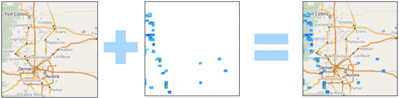

MapCache¶
Web Service¶
MapCache est un serveur qui implémente la mise en cache de tuiles pour accélérer l’accès aux couches WMS. Les principaux objectifs sont d’être rapides et facilement déployables, tout en offrant les fonctionnalités essentielles (et plus!) attendues d’une solution de mise en cache de tuiles.
MapCache fait partie de la famille MapServer, mais peut être configuré pour mettre en cache et servir des données à partir de n’importe quel serveur géospatial qui utilise WMS. MapCache peut être exécuté sur Apache en tant que module ou sur n’importe quel serveur Web qui prend en charge CGI/FastCGI tel que IIS, Nginx et Jetty.
{kind=link}
Fonctionnalités principales¶
- Permet de stocker des caches de tuile
- sur disque
- dans le cloud à l’aide de REST (S3, Azure, Google)
- dans les bases de données, y compris SQLite, Berkeley DB, Riak
- en cache mémoire
- Inclut une application semeur
- Mise en cache basée sur des dimensions (telles que le temps)
- Permet la mise en cache des tuiles Mapbox Vector (MVT) et UTFGrid
- Grilles personnalisables
- Permet d’assembler les tuiles ensemble , ce qui permet de fusionner celles-ci pour différents jeux de données en une seule tuile à envoyer au client
- Inclut une application semeur pour pré-remplir les caches à partir de la ligne de commande
- Permet aux demandes d’être proxifiées vers un serveur
- Une interface de démonstration intégrée
Standards implémentés¶
- Support de nombreux standards de l’Open Geospatial Consortium (OGC)
- Les standards supplémentaires comprennent :
- TMS
- Google Maps XYZ
- KML SuperOverlays
Démo¶
Documentation¶
Détails¶
Site internet : https://mapserver.org/mapcache
Licence: Licence style MIT
Version: 1.10.0
Plates-formes supportées : Windows, Linux, Mac
Support: https://mapserver.org/community/